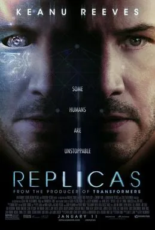

The genetics
Replicas combines human cloning with mind uploading. The cloning is handled by Ed, a specialist in reproductive cloning, whose pods grow adult bodies in seventeen days, with the risk that they will age abnormally fast if the minds are not transferred in time. The two scientists steal company equipment and break the law and bioethical rules out of grief, and the company behind them wants the technology as a military weapon. In the end the cloning is turned into a business that sells new lives to the wealthy. The film's interest in genetics is limited: the clone bodies are simply empty vessels, and identity is located entirely in the copied neural map, so the film is more about consciousness than heredity. Its science is fanciful. A clone is a genetic copy that must grow and develop like any other organism, it cannot be produced as an adult in days, and human reproductive cloning has never been achieved.
How genetics is portrayed
- Overall portrayal of genetics
- mixed The family's restored happiness rests on deception (clones with edited memories, Zoe erased and later re-cloned, the crash wiped from their minds) and on Ed's murder, and the cloning ends up sold to the wealthy by a military-funded company, yet the film plays the reunited family's ending sincerely rather than as hollow or creepy, keeping the cost in view without condemning William.
- Outcome of the genetic intervention
- mixed The cloning brings the family back, but at the cost of erasing a child, editing memories, Ed's murder and a deadly corporate pursuit; it ends with the family whole again and clone transfers sold to the rich.
- William Foster
- ambivalent Aim: personal, benevolent (positive). After his family dies, the Bionyne neuroscientist steals equipment, has clones grown and transfers their minds, choosing to sacrifice his youngest and erase her from the others' memories; a grieving father breaking law and ethics whom the film still lets win.
- Ed Whittle
- ambivalent Aim: not stated (not applicable). The reproductive cloning specialist grows the replacement bodies under pressure from William, is complicit in the theft and fails to dispose of the bodies, which leads to their discovery; he is killed by Jones. His own aim is not stated.
- Bionyne Corporation (Jones)
- villain Aim: military, commercial (negative). The company's research, secretly government-funded to build a military weapon, treats the resurrected family as 'loose ends' to eliminate; Jones is the antagonist who kills Ed.
The story
William Foster, a neuroscientist at the biotech company Bionyne in Puerto Rico, is trying to transfer the mind of a dead soldier into an android, while his colleague Ed Whittle specialises in human cloning. When William's wife and three children are killed in a car crash, he persuades Ed to help him bring them back: he copies their neural maps, and Ed grows replacement bodies in cloning pods over seventeen days. Only three pods are available, so William chooses to sacrifice his youngest daughter, Zoe, erasing all memory of her from the others' minds. He transfers the minds into the clones, but his family gradually discovers the truth. William's boss reveals that the project is funded by the government to create a military weapon and that the family must be eliminated. William uploads his own mind into the android, which defeats the company's men, and strikes a deal to sell clone transfers to the rich, while he lives on with his family, including a newly cloned Zoe.